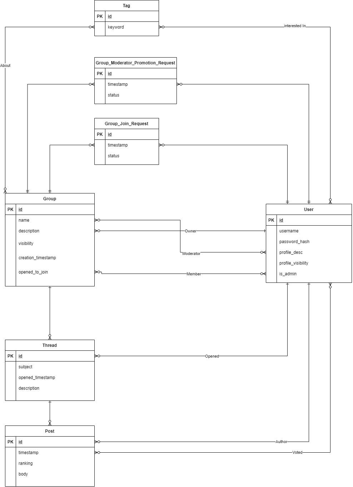

Uveďte prosím existující zástupce všech rolí uživatelů.
| Login | Heslo | Role |
|---|---|---|
| admin | admin | Administrátor |
| prodavac | prodavac | Prodavač |
| franta | franta | Zákazník |
(Diagram případů užití není nutné vkládat, pokud IS implementuje role a případy užití definované zadáním.)
Informačný systém je implementovaný pomocou frameworku Flask, ktorý využíva tzv. Views, čo sú finkcie volané pri dotaze na určité URL
Ak nie je povedané inak, nasledujúce súbory sú v adresári app/routes/
login()register()promote_to_admin(username) (musí byť volaný z príkazového riadku v kontexte aplikácie (napr. flask users promote-to-admin username))adminDeleteUser(username)userProfile(useranme). User.hasPermissionToViewUser(user) in models.py
showUsers()editUserProfile() a changePassword()createGroup()joinGroup(groupName)requestPromotionToModerator(groupName)showPendingJoinRequests(groupName)showPendingModeratorPromotionRequests(groupName)approveJoinRequest(gruopsId, requestId) resp. denyJoinRequest(gruopsId, requestId)approveModeratorPromotionRequest(groupId, requestId) resp. denyModeratorPromotionRequest(groupId, requestId)showAllGroups()showJoinedGroups()showTaggedGroups(tagKeyword)showGroup(groupName)showMembers(groupName)showThread(threadId)createThread(groupName)createPost(threadId)upvotePost()downvotePost()Aplikácia v produkčnom prostredí používa PostrgreSQL databázu na serveroch Heroku.
Aplikácia samotná komunikuje s databázou pomocou ORM vytvoreného nástrojom SQLAlchemy.
Migrácie databáz sú vytvorené nástrojom Alembic
FLASK_APP=iis-xhosta05-2020 : názov aplikácie pre flask.FLASK_ENV=production : typ prostredia pre FlaskSECRET_KEY : secret key.APP_ENVIRONMENT=production : typ prostredia (production/development), ovplivňuje určité nastavenia, napr. logging levelDATABASE_URL : url použitej databázy.REMEMBER_COOKIE_DURATION : Doba po ktorú sa bude udržiavať cookie o užívateľovi.flask db init - Inicializuje podporu pre databázové migrácie. Tento príkaz je treba volať iba pred prvou migráciou.flask db migrate - Vytvorý migračný skrip automaticky z modelu definovaného v kódeflask db upgrade - Upgraduje databázuflask runAplikácie na Heroku využívajú tzv. Ephemeral Filesystem, čo znamená že úpravy súborov za behu aplikácie nemusia (a nebudú) permanentné. Z tohto dôvodu je treba migračný skript pre databázu vytvoriť pred "pushnutím" aplikácie na heroku, a pri spustení aplikácie stačí vykonať upgrade.
Zde popište, které body zadání nejsou implementovány a z jakého důvodu. Např. „Z časových důvodů nebyla implementována správa uživatelů.” Pomůžete tím zrychlit hodnocení, když neimplementované funkce nebudeme muset dlouze hledat.